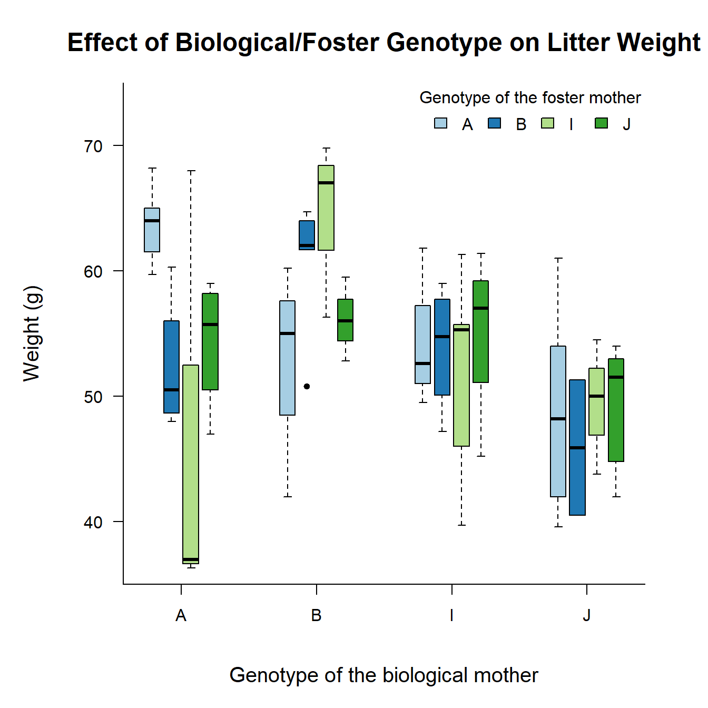
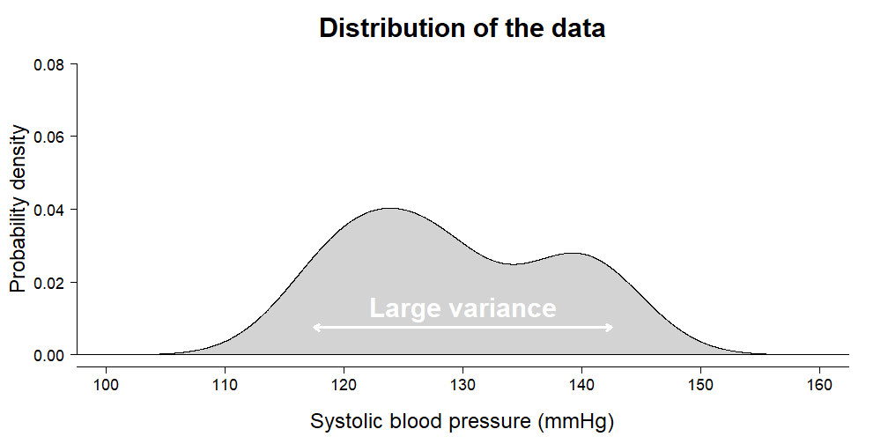

Chapter 6 ANOVA
Analysis of variance (ANOVA) is a model for comparing any number of group means. The observations are assumed to be independent, deviations from the group means are assumed to follow a normal distribution, and group variances are assumed to be equal.
6.1 Overview
Watch part 1 of the ANOVA lecture and answer the questions below.
Summary of the example in the video
Here is a summary if you want to reproduce the example analysis:
1. Enter the data:
SBP <- c(121, 122, 114, 124, 118, 127, # thiazide
126, 128, 118, 130, 132, 124, # calcium channel blockers
145, 145, 139, 133, 146, 150) # placebo
treatment <- gl(n = 3, k = 6, labels = c("thiazide", "CCB", "placebo"))
DF <- data.frame(treatment, SBP)2. Plot the data:
plot(SBP ~ treatment, data = DF)3. Fit an ANOVA:
ANOVA <- aov(SBP ~ treatment)4. Perform visual diagnostics:
require("car") # Install if missing
par(mfrow = c(2, 2)) # Plot in a 2x2 grid
plot(ANOVA, which = 1) # Residuals vs fitted
qqPlot(ANOVA, reps = 1e4) # QQ-plot. See footnote for errors
plot(ANOVA, which = 3) # Scale-location
plot(ANOVA, which = 4) # Cook's distance
par(mfrow = c(1, 1)) # Restore the default5. Check the omnibus test:
summary(ANOVA)6. If the omnibus test is significant, you can perform a post hoc analysis:
posthoc <- TukeyHSD(ANOVA)
print(posthoc)
plot(posthoc)6.1.1 Exercises

- The
PlantGrowthdata set is included with the default installation of R. It contains \(30\) independent measurements of dry weight from plants subjected to three types of treatment. You can view it by runningView(PlantGrowth)in the console, or you can see the structure of the data and produce a summary of the data like this:
str(PlantGrowth)
summary(PlantGrowth)Make a plot showing the weight of the different groups. You can use the same kind of plot as shown in the video.
Fit an ANOVA and save it as an object called
ANOVA.Here is the code I used in the video to perform visual diagnostics. Run it and comment on the plots.2
require("car") # Install if missing
par(mfrow = c(2, 2)) # Plot in a 2x2 grid
plot(ANOVA, which = 1) # Residuals vs fitted
qqPlot(ANOVA, reps = 1e4) # QQ-plot. See footnote for errors
plot(ANOVA, which = 3) # Scale-location
plot(ANOVA, which = 4) # Cook's distance
par(mfrow = c(1, 1)) # Restore the defaultPerform the omnibus test. Is there a difference in weight among any of the groups?
Perform a post hoc analysis. Which group means differ significantly?
6.2 How does ANOVA work?
Watch part 2 of the ANOVA lecture and answer the questions below.
6.2.1 Exercises
- Are the following statements true or false?
- The omnibus test is used to see which of \(k\) group means differ;
- The omnibus test is an \(F\)-test;
- The residual variance is smaller than the total variance in the outcome;
- The \(p\)-value is the chance of obtaining an \(F\)-value at least this large if there were no differences in group means;
- The post hoc of a one-way ANOVA must still be corrected for multiple testing.
- Below is the output of an omnibus test of some data:
Df Sum Sq Mean Sq F value Pr(>F)
Species 2 63.21 31.606 119.3 <2e-16 ***
Residuals 147 38.96 0.265 - What is the number of groups?
- What is the total sample size?
- What does
Pr(>F)mean?
- Here is another omnibus test, but with some values omitted:
Df Sum Sq Mean Sq F value Pr(>F)
Group x 3488 697.5 z 0.000277 ***
Residuals 48 5745 y - What is the value of
x? - What is the value of
y? - What is the value of
z?
- Why do we bother with an omnibus test, why not just use the post hoc immediately after fitting the model?
6.3 Two-Way, Multi-Way & Interaction
Watch part 3 of the ANOVA lecture and answer the questions below.
6.3.1 Exercises
In an experiment on rats, a researcher wanted to find out what the effect would be of the genotype of the biological mother and the foster mother on the growth of the rats.3 \(61\) rat litters were taken from their biological mother and placed with a foster mother. See the figure below.

Which is suitable here: One-way, two-way, or multi-way ANOVA?
Do you expect an interaction or main effects here? Explain.
Based on your answer to the previous question, run an appropriate ANOVA for this data set. Perform visual diagnostics, look at the
summary, and perform a post hoc analysis. Write a short conclusion. The data set is calledgenotypeand you can access it by loading the packageMASS:
require("MASS") # Comes preinstalled with R
str(genotype)
summary(genotype)- (hard) Search online for the definition of the central limit theorem. Is normality of the residuals a reasonable assumption for this study from a theoretical point of view? (HINT: Look at the help page for the
genotypedata set and read the description of the outcome variable.)
6.3.2 Additional Exercises (*)

The
irisdata set is included with the default installation of R. It contains \(150\) independent measurements of sepal and petal dimensions from three types of Iris species. Choose one of:Sepal.Length,Petal.Length,Sepal.WidthandPetal.Widthand perform a complete analysis to find out whether species differ on average.In this exercise we are going to calculate how much variance your ANOVA from the previous exercise has explained. Remember the animation from the video:

- Estimate the total variance in the outcome using
var(); - Estimate the residual variance. You can obtain the residuals of a model using
residuals()on the fitted model; - The variance explained is one minus the proportion of the total variance that remains after fitting the model. How much variance did your model explain?
- If your model is called
ANOVA, then you can check your answer as follows:summary(lm(ANOVA))$r.squared. Did you get the calculation right? This value will be explained again in the linear regression lectures.
6.4 Where is part 4? (*)
When you use two- or multi-way ANOVA, Tukey’s Honest Significant Difference only corrects for the categories within each explanatory variable. This quickly becomes problematic: If you’ll recall from the multiple testing lecture, with \(\alpha = 0.05\), with as little as three explanatory variables, you will already have a chance of \(1 - (1 - 0.05)^3 \approx 14.3\%\) chance of at least one false positive among all comparisons.
In order to correct for this, you would need to somehow obtain uncorrected \(p\)-values from TukeyHSD and then perform multiple testing correction for the total number of comparisons. This is unfortunately not very easy to do, so Dr. van Mil and I decided that it would not be part of the GRS course.
We will include this in the Advanced Statistics course for master students. If you are interested, or need this for your internship, please have a look at the vignettes of the emmeans package, or wait for me to release part 4 after the course. What a vignette is, is covered in the video on help files.
List of problems and how to fix them: (1) If you get an error about a missing package, install
carusinginstall.packages("car"), then run diagnostic plots code again. (2) If you can’t installcar, replaceqqPlot(ANOVA, reps = 10e4)with:plot(ANOVA, which = 2). (3) If you get an error about figure margins being too small, simply enlarge your plot pane as shown here, then run the diagnostic plots code again.↩︎Bailey, D. W. (1953): The Inheritance of Maternal Influences on the Growth of the Rat. Unpublished Ph.D. thesis, University of California. Table B of the Appendix.↩︎